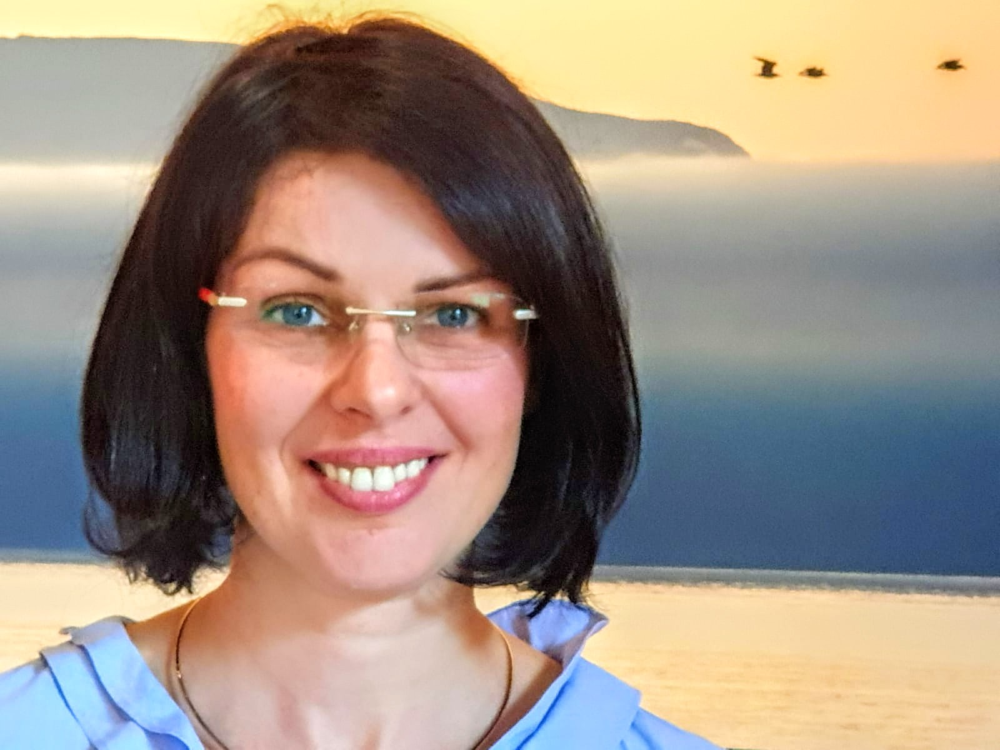

Kristina Stadler
Jahrgang 1975
| 1996-1999 | Ausbildung zur Krankenschwester |
| 2011-2012 | Kinesiologie Ausbildung in Braunschweig bei Anja Trude |
| 2012-2014 | Ausbildung zur Heilpraktikerin, Amara Schule in Wolfenbüttel |
| 2014-2015 | Irisdiagnose: Teil 1 und 2 in Oberstenfeld bei Vistara Haiduk |
| 2014-2016 | Healing-Ausbildung in Lühnde bei Claudia Hempler-Gödeke |
| 2014-2019 | Osteopathie Studium bei IAO: Inter nationale Akademie of Osteopathie in Deutschland, Osterreich und in der Schweiz |
| 2019 | Ernährungsseminar, bei D.O. Gregori Wladimir Treu am Gardasee in Italien |
| 2020-2023 | TCM Ausbilung: Akupunktur, Moxa, Schröpfen, Qi Gong in Frankfurt bei Luis, Gundula, Mariana Rojas-Arteaga |
| 2021-2022 | Psycho-Physiognomik Asubildung in Wendhausen bei Ingrid Warwas |
| 2022-2024 | Spirituelle Andenmedizinin Ausbildung in Frankfurt bei Luis Rojas-Arteaga und Tayta Isaac Mallqui |